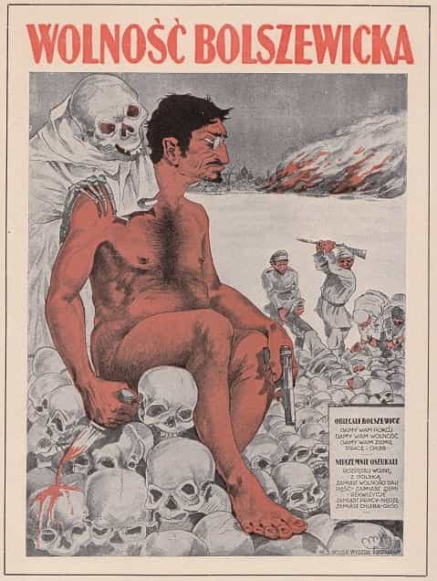

< < < Back
Communist Leon Trotsky Had A Detailed Plan For Creating A Soviet America – Return Of Kings
Within an archive documenting Communist history and subversion efforts, I found an interesting item from Leon Trotsky called “If America Should Go Communist“. This was written in 1934, when he was living in Mexico, having made himself persona non grata everywhere else in the world because of his incessant meddling. At the time, the USA was going through the Great Depression. As the preface explains (though in nicer words), he thought it would make a fine opportunity to peddle his brand of Communism to a desperate public over here. Let’s see what Comrade Trotsky promised, and if today’s leftists have learned anything.
“We goofed up everything in Russia, but give us another chance in the USA”
“Peace and freedom in Sovdepya” with Trotsky butt naked over a pile of skulls
Should America go communist as a result of the difficulties and problems that your capitalist social order is unable to solve, it will discover that communism, far from being an intolerable bureaucratic tyranny and individual regimentation, will be the means of greater individual liberty and shared abundance.
Sure thing! Then he lists several reasons why Americans are skeptical of Communism, given its track record thus far. Actually, it’s a pretty damning bill of particulars, though the USSR’s worst days were still far from over.
Just one minute here. Trotsky was a Communist since 1896, back when he was still calling himself Lev Davidovich Bronstein. He was quite influential in the Party establishment even before the Revolution, and became Lenin’s second in command. Later he got sidelined, and eventually got himself booted out of the country, but before that he had plenty of opportunities to move the USSR in a positive direction. Does he claim any responsibility? What things did he fix while still in power? For that matter, how often do leftists own up to their mistakes?
He explains that it will be all different here because of historical factors:
Actually American soviets will be as different from the Russian soviets as the United States of President Roosevelt differs from the Russian Empire of Czar Nicholas II. Yet communism can come in America only through revolution, just as independence and democracy came in America.
Then he explains that revolution is a fine American tradition. Shall we break out the fife, drums, and Roman candles now, Comrade Trotsky? He goes on to say that everyone below the top 5-10% of the public “is already economically prepared for communism.” So how was that translating to popular support? In the 1932 election, the Communist candidate got 0.26% of the popular vote; in 1936, 0.17%; the Revolution is coming! This stunning miscalculation was even more ridiculous than last year’s estimates that Donald Trump only had a 1% chance of winning the Presidency.
Promises, promises

“Bolshevik freedom” – Trotsky wasn’t too popular in Poland either
Trotsky paints a wondrous picture of how much better the manufacturing sector will be. Afterward, “Costs of production will be cut to 20 percent, or less, of their present figure.” Uh, how exactly? Which industries have 80% unnecessary overhead? That’s even better than telling us Obamacare will give free healthcare to millions while not raising prices for the people who do pay for their doctors. Then this zinger:
To be sure, the American soviets would establish their own gigantic farm enterprises, as schools of voluntary collectivization. Your farmers could easily calculate whether it was to their individual advantage to remain as isolated links or to join the public chain.
So how did that “voluntary collectivization” work out for the Ukrainians back then? Further, he explains how small businesses will be sovietized:
Without compulsion! The American soviets would not need to resort to the drastic measures that circumstances have often imposed upon the Russians. In the United States, through the science of publicity and advertising, you have means for winning the support of your middle class that were beyond the reach of the soviets of backward Russia with its vast majority of pauperized and illiterate peasants.
We get it about all the propaganda. At least he’s starting to come close to telling the truth, at last.
Even the intensity and devotion of religious sentiment in America will not prove an obstacle to the revolution. If one assumes the perspective of soviets in America, none of the psychological brakes will prove firm enough to retard the pressure of the social crisis.
Where do I even begin?
Japan will probably have joined the communistic ranks even before the establishment of the American soviets. The same is true of Great Britain.
What a great prophet Comrade Trotsky was. He’s really established his credibility here.
Does any of this sound familiar?
The residence of Diego Rivera and his wife Frieda Kahlo. Trotsky couch surfed here for a couple years and boinked his friend’s wife.
The governments of Central and South America would be pulled into your federation like iron filings to a magnet. So would Canada. The popular movements in these countries would be so strong that they would force this great unifying process within a short period and at insignificant costs. I am ready to bet that the first anniversary of the American soviets would find the Western Hemisphere transformed into the Soviet United States of North, Central and South America, with its capital at Panama.
So all this was going to be with the permission of the people in the countries involved, right?
Later he says prosperity would be assured because the USA already has lots of developed industry, unlike the USSR which had to build things from the ground up. Just one little problem—the USA did, in fact, build itself from the ground up; so why mess with something that works? Capitalism isn’t perfect, but it’s a hell of a lot better than Communism. And apparently Trotsky was unaware that Latin America wasn’t nearly as industrialized, which he would’ve known if he’d set foot outside of the posh neighborhood where he was staying in Mexico City.
According to Trotsky, Communism didn’t work in the USSR because of paper money. So the USA first should implement Communism with the gold standard, later “money will become ordinary paper slips, like trolley or theater tickets” (uh, like paper money?), and eventually money goes away because everyone gets everything they want for free. Pull my other leg; it plays Jingle Bells. Then this:
You can thus avoid growth of bureaucratism by the practice of soviets, that is to say, democracy – the most flexible form of government yet developed. Soviet organization cannot achieve miracles but must simply reflect the will of the people.
Here, by “soviets” he means the multi-level council system that was supposed to hold power in the USSR, though it was actually a dictatorship. Trotsky’s claims are a smidge hard to swallow; if the USA was going to remain democratic, why would revolution be necessary in the first place? If that’s what the people wanted, they could just form a Constitutional convention.
Soviet America will have to find a new solution for the question of how the power of the press is to function in a socialist regime. It might be done on the basis of proportional representation for the votes in each soviet election.
Thus the right of each group of citizens to use the power of the press would depend on their numerical strength – the same principle being applied to the use of meeting halls, allotment of time on the air and so forth.
And I have a bridge for sale in Brooklyn.
While the romantic numskulls of Nazi Germany are dreaming of restoring the old race of Europe’s Dark Forest to its original purity, or rather its original filth, you Americans, after taking a firm grip on your economic machinery and your culture, will apply genuine scientific methods to the problem of eugenics. Within a century, out of your melting pot of races there will come a new breed of men – the first worthy of the name of Man.
A few items here. First, all political considerations aside, the ancient Germans were actually pretty respectable, as Tacitus noted. Second, his plan to destroy genetic uniqueness would’ve gotten him tarred and feathered if he’d come to the USA to preach it back in 1934. They had the guts to fight back, before decades of propaganda to convince the public that their heritage isn’t worth preserving. Even now, most people aren’t enthusiastic about crossbreeding ourselves into “New Soviet Man”, though not for lack of trying by fruitcake leftist social engineers. Third, mentioning eugenics now makes leftists scream like little girls on a roller coaster. That’s right, Comrade Trotsky advocated eugenics, how about that!
In summary
Oh, did that icepick hurt?
Some leftists remember Trotsky fondly, thinking that Communism would’ve worked if only he’d been in charge. As we’ve seen here, it’s all the same bullshit. Much more likely, a Soviet America would turn out just the same as all the other countries the Communists have wrecked.
Other than that, Trotsky clearly was incompetent; not quite the brightest bulb in the chandelier. This was pretty obvious with his final act. He survived a couple of attempts to whack him, knowing full well his enemies were out to get him. Fortunately, he wasn’t smart enough to find somewhere else to hide out, and so they finally finished the job on this lying weasel.
Read More: Why Communism Doesn’t Work